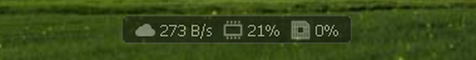

← 全部示例
deskmon（桌面监控悬浮窗）
一条贴在桌面上的小挂件：实时显示网速、内存和 CPU 使用率，每秒刷新。
Windows 11
Windows 7

Windows XP
可随手拖到任意位置，位置和背景深浅会被记住，重启自动恢复。
托盘右键菜单：置顶、大小档（100%–200%）、浅色 / 深色背景、开机自启动、退出。
1.2 MB · 单文件 · 免安装
· Windows XP+ (32 位)
· 已在 XP / Windows 7 / Windows 11 验证
下载 deskmon.exe
图标来源：云 / 内存条 / CPU 芯片三个图标取自
Vitals
（
GPL-3.0-or-later），预处理为 16×16 32bpp BMP-ico 后内嵌到 exe。
再分发时应保留相同许可声明并提供源码获取路径。